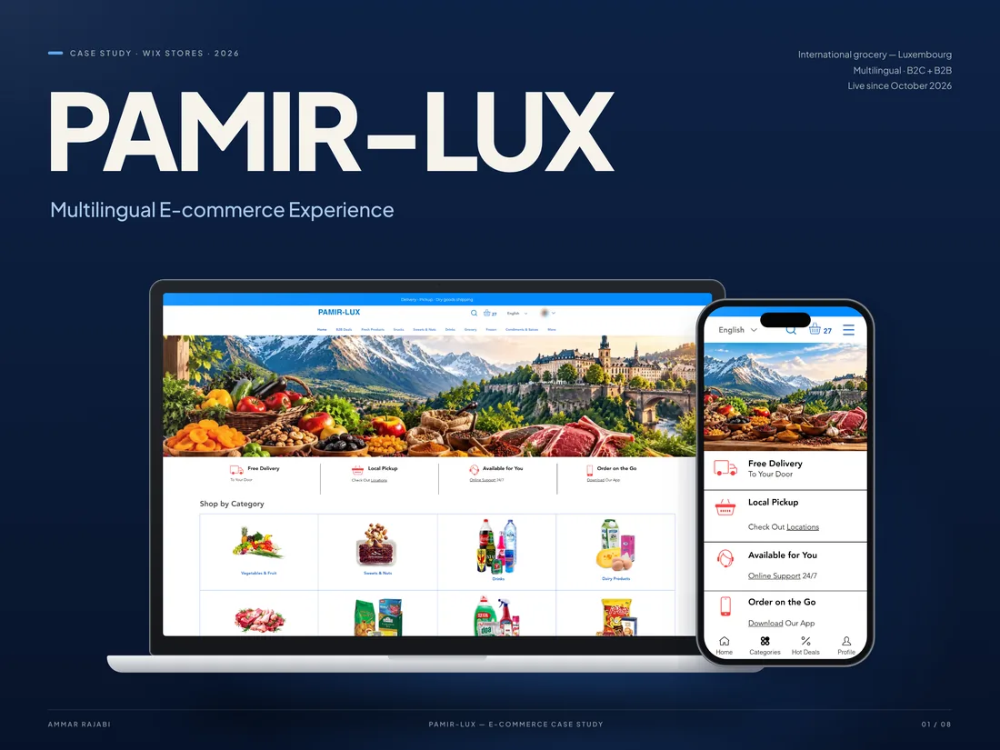
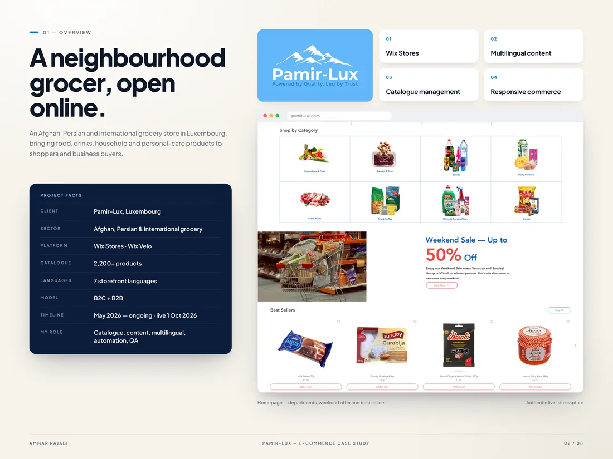
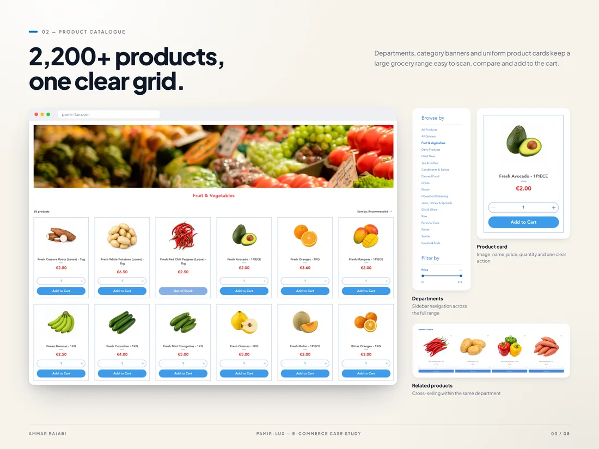
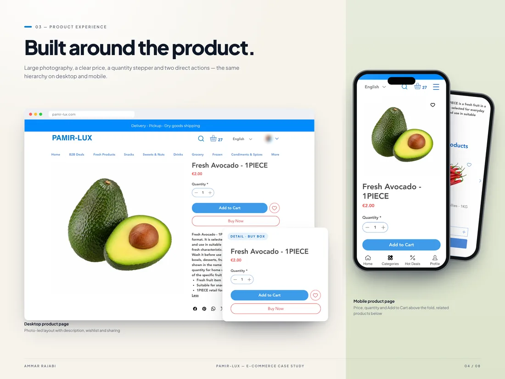
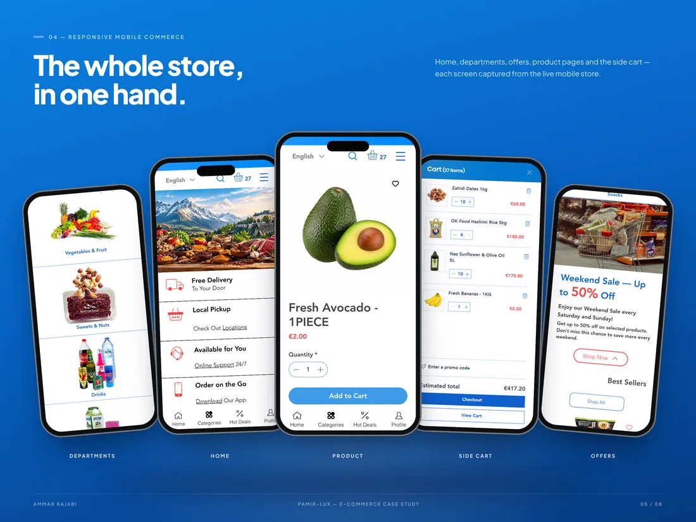
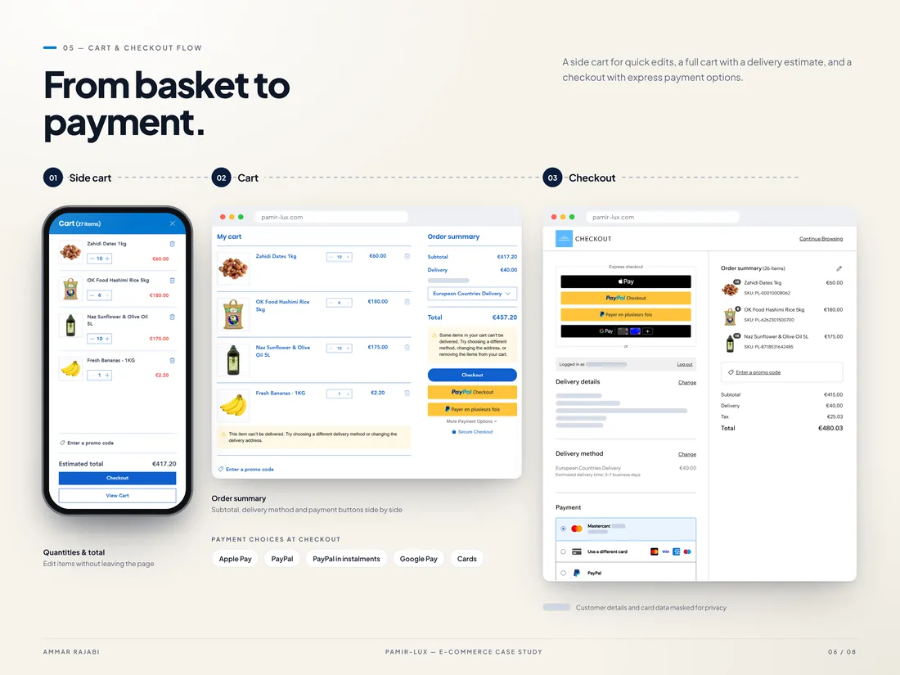
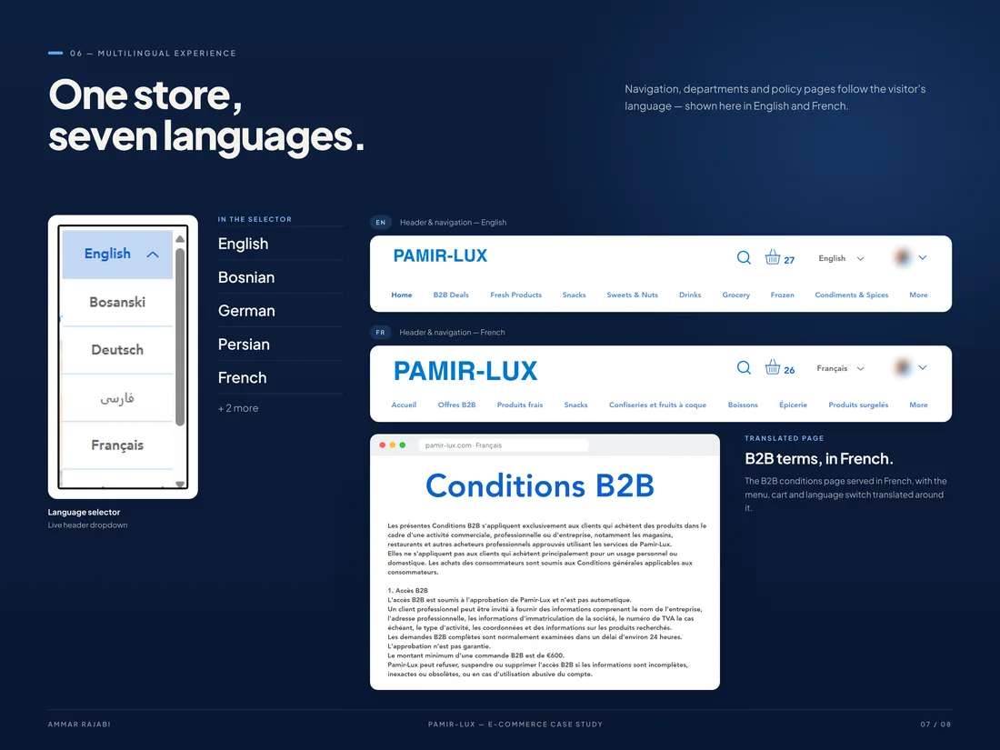
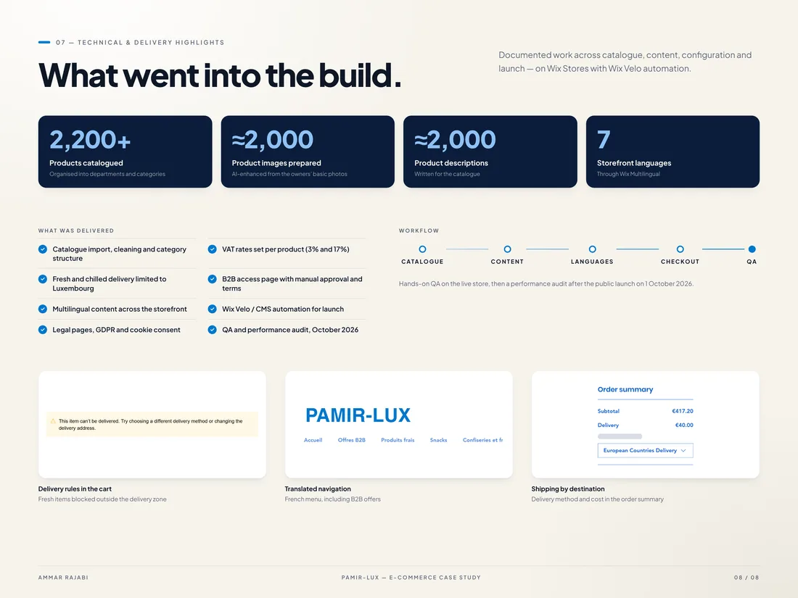
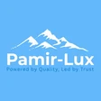
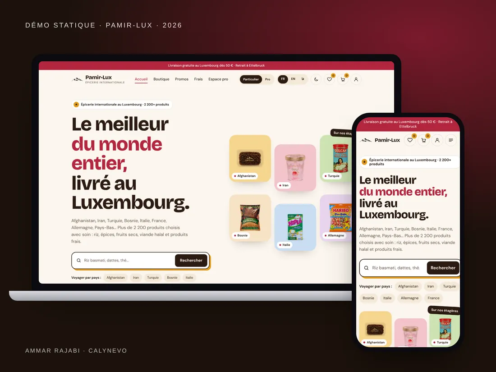

Pamir-Lux
Since May 2026, I have contributed to the design, implementation and ongoing operation of Pamir-Lux’s Wix store: web design, 2,200+ products, 7 languages, e-commerce, automation and maintenance. The website has been live since 1 October 2026.

In 30 seconds · Real project
- The need
Sell online in Luxembourg, in several languages, B2C and B2B.
- What I did
Web design, a 2,200+ product catalogue, 7 languages, Velo automation, maintenance.
- The result
Live since 1 October 2026, plus a static demo for what comes next.
Key numbers
- 2,200+products
- 7languages
- B2C+B2Btwo journeys
- 1 Oct.live in 2026
The context
Pamir-Lux is a grocery and everyday-products retailer in Luxembourg. The owner set up the initial Wix base and theme; I then took on a major share of the hands-on work across design, pages, catalogue operations, multilingual content, e-commerce journeys, automation and maintenance, working collaboratively with the team and with owner approval.
The challenge
Evolve a real international e-commerce site without interrupting operations: structure more than 2,200 products, keep seven languages consistent, improve B2C/B2B journeys and continue delivering reliable front-end and Wix back-end changes.
My role
- Web design and implementation of pages, navigation, header/footer and responsive improvements.
- Managing an evolving 2,200+ product catalogue: categories, additions, images, descriptions and product data.
- Seven-language content and translations, B2C/B2B journeys, delivery, cart, checkout and payments.
- Wix/Velo automation, quality assurance, launch work and ongoing maintenance with Pamir-Lux team approval.
The foundation remains Wix Stores, extended through design, configuration and custom Velo automation. Changes are developed collaboratively with the Pamir-Lux team and reviewed with the owners before going live.
01 / 05
Overview
Context, platform and the real scope of the project, shown with live pages.

Context and key facts Wix Stores, 2,200+ products, 7 languages, B2C and B2B.
02 / 05
Catalogue and product page
A large catalogue kept readable: departments, consistent product cards and purchase-focused product pages.

Product catalogue Departments, category banners and clear product cards.

Product page Photo, price, quantity and add to cart, on desktop and mobile.
03 / 05
Mobile commerce
The full journey on a phone, from home to cart.

Mobile store Home, departments, offers, product page and side cart.
04 / 05
Checkout and languages
A clear checkout and a store in seven languages. Personal data is masked.

Cart and checkout Cart, delivery estimate and payment options.

Seven languages Language selector and translated navigation, in English and French.
05 / 05
Technical delivery
The documented work behind the store: catalogue, content, delivery rules, B2B access, Velo automation and quality checks.

What was delivered Catalogue, VAT, Luxembourg delivery, B2B access, Velo automation and QA.
“We had an excellent and deeply satisfying experience working with CALYNEVO. The team is remarkably responsible, highly responsive and detail-oriented. Our website was delivered right on schedule. The highlight of their work is their outstanding support: whenever we encountered an issue with any section of the site, they assisted us with a professional, patient and friendly approach. I highly recommend working with CALYNEVO.”

2026
Bonus: a demo for what comes next
The owners want to leave Wix, which they find too slow on mobile (around 47 on Lighthouse). I built a separate static demo: home, a 200-product shop, cart, customer account and trade area, in French, English and Persian. It stays in the green on Lighthouse, on mobile and desktop.

Contact
A role, a project or a simple question?
I reply in English or French, usually within 48 hours.